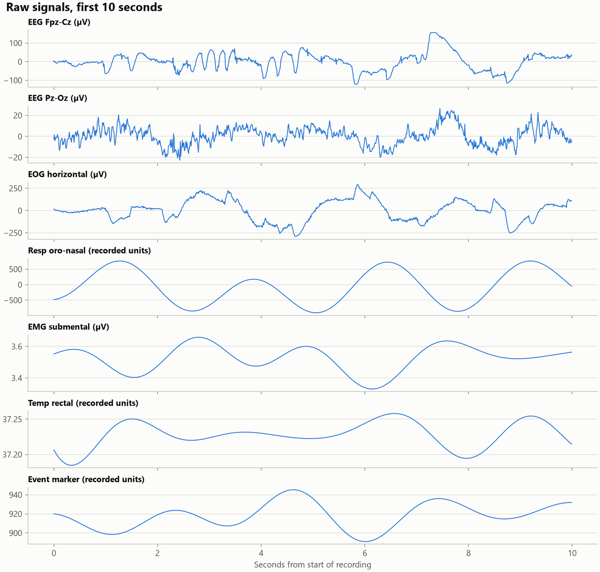
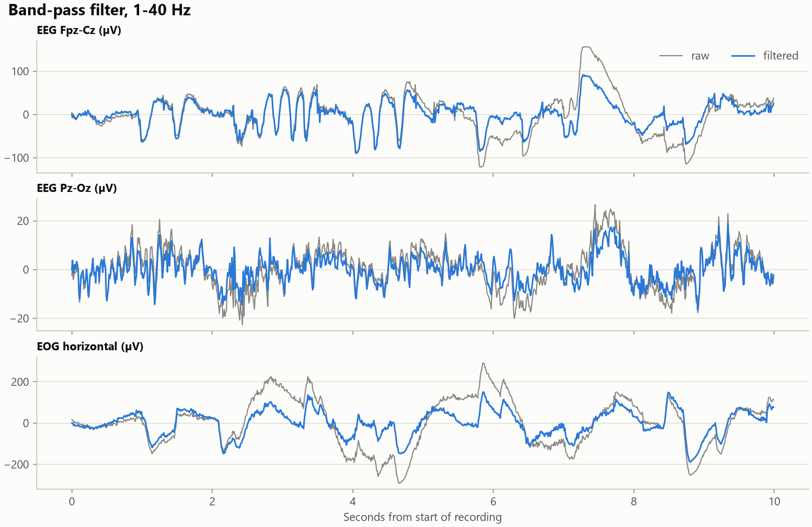
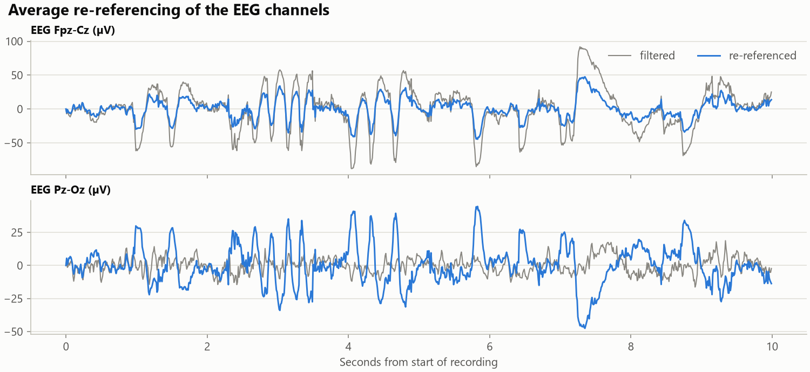
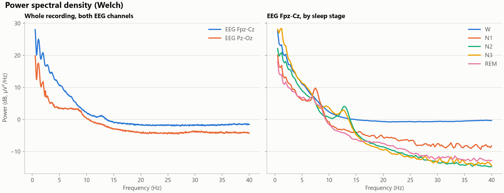
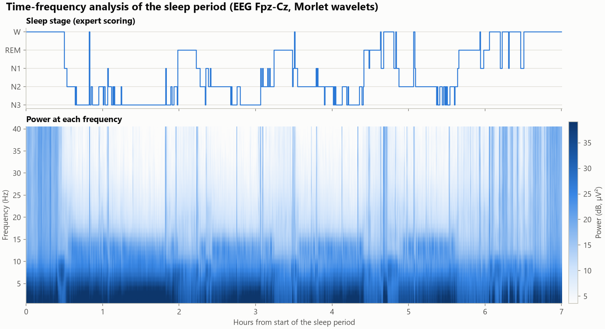
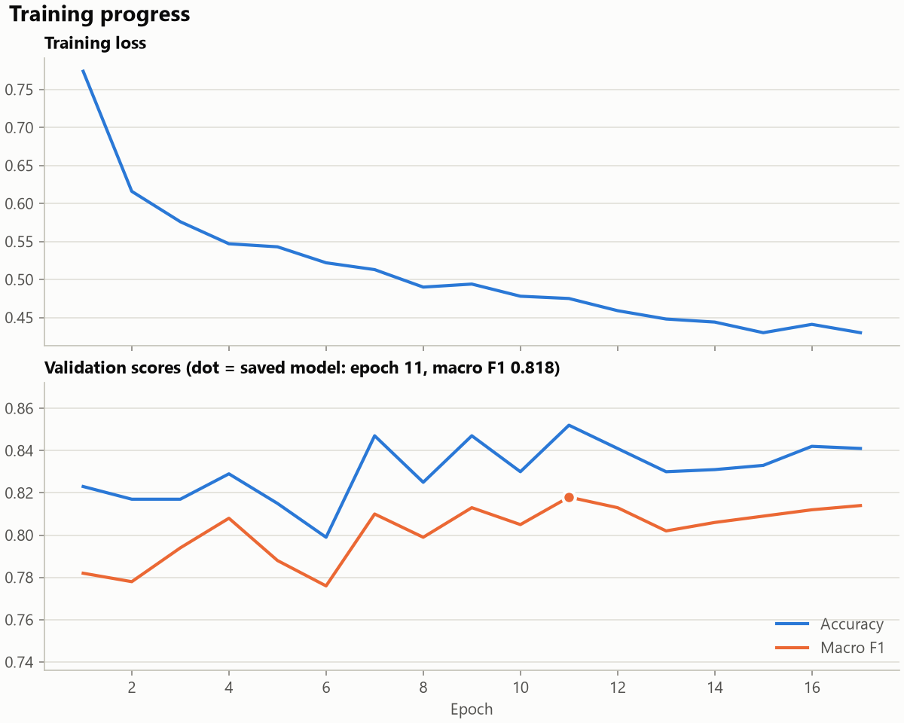
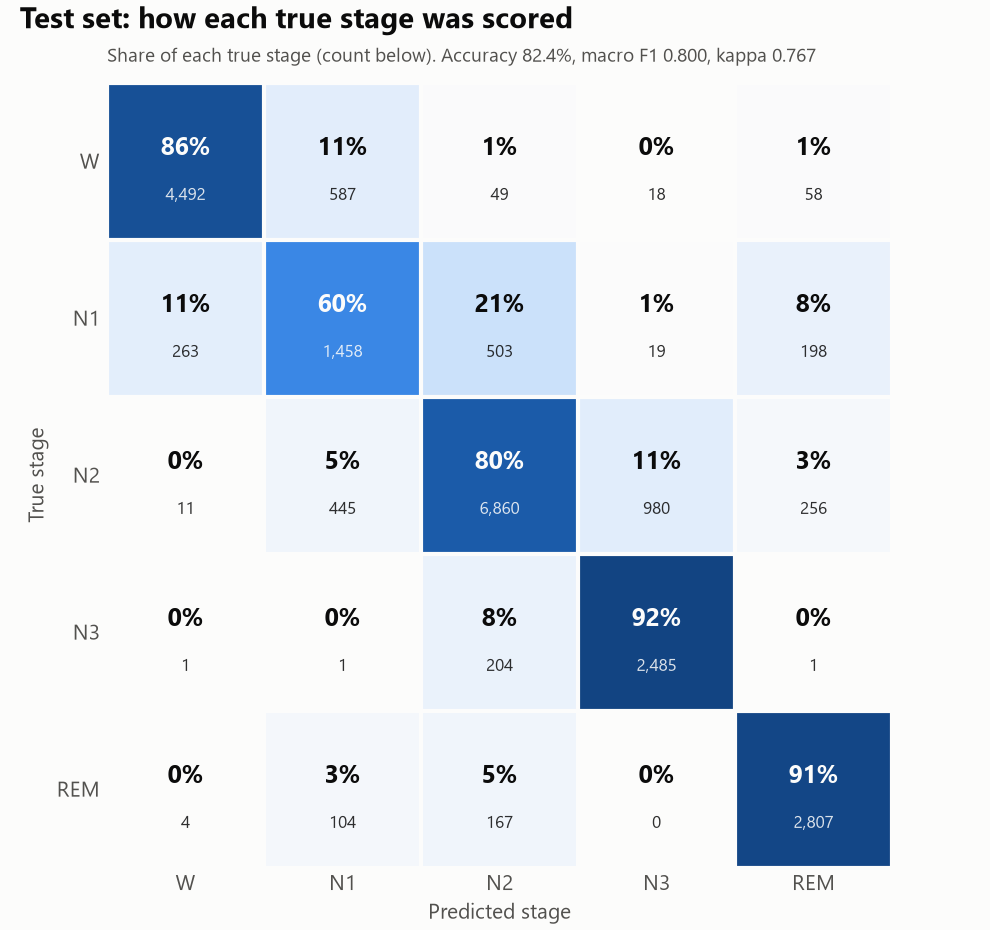
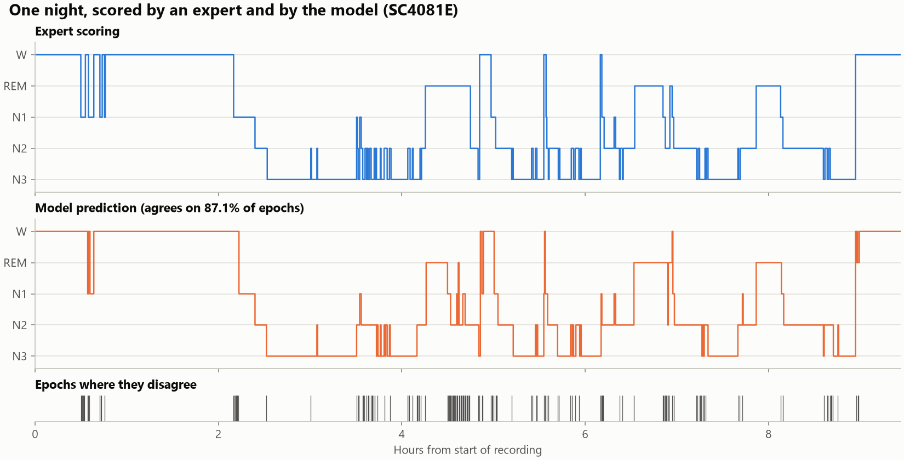
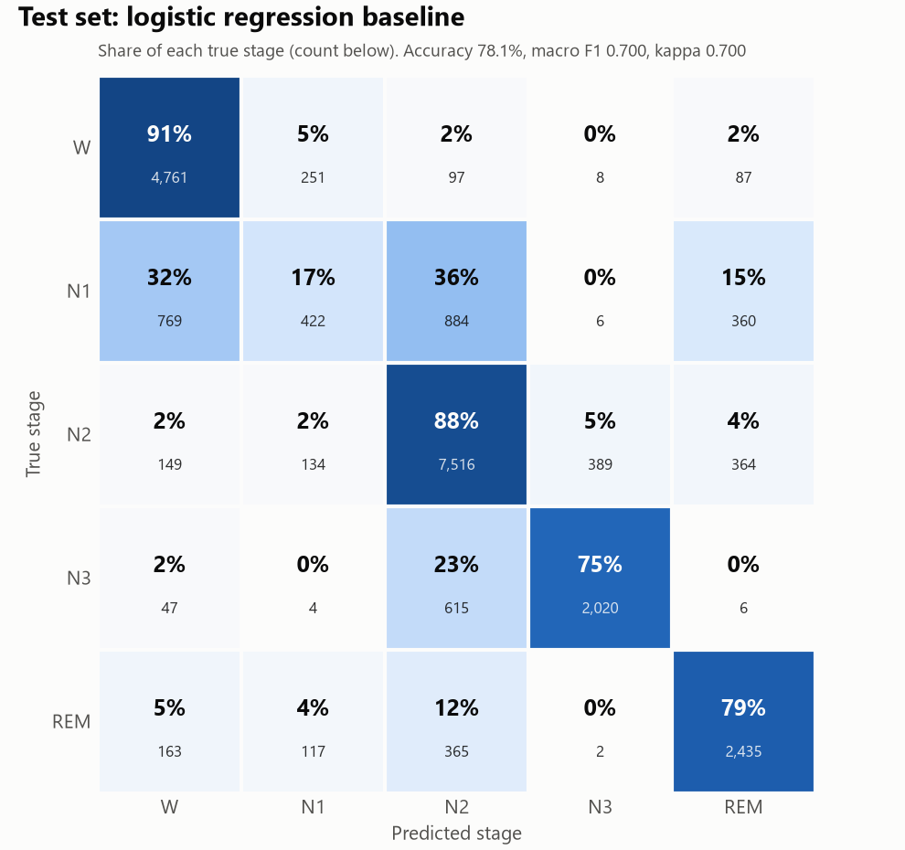

Sleep-stage classifier: work done
A neural network, trained from scratch on the Sleep-EDF Expanded dataset, that labels every 30 seconds of an overnight recording as one of five sleep stages. On 20 recordings from people it never saw in training, it agrees with the expert scoring on 82.4% of epochs.
1. Dataset and preprocessing
The raw data is 197 overnight recordings (153 from the cassette study, 44 from the telemetry study),
8.1 GB of EDF files, each with an expert-scored hypnogram. sleep_staging/preprocess.py does the following
to every recording:
| Step | What it does |
|---|---|
| Channels | Keeps EEG Fpz-Cz, EEG Pz-Oz and horizontal EOG, all at 100 Hz |
| Filter | Band-pass 0.3–35 Hz |
| Epochs and labels | 30-second epochs labelled from the hypnogram; stages 3 and 4 merged into N3 |
| Trim | Sleep period plus 30 minutes of wake on either side |
| Drop | 1,988 epochs scored as movement or unknown |
| Normalise | Each channel standardised within the recording, clipped at ±20 standard deviations |
The output is one file per recording in data/sleep_edf/ (4 GB in total) and an
index.csv summary.
Class balance
| Stage | Epochs | Share |
|---|---|---|
| W (wake) | 70,140 | 29.5% |
| N1 | 25,175 | 10.6% |
| N2 | 88,983 | 37.4% |
| N3 | 19,454 | 8.2% |
| REM | 34,184 | 14.4% |
2. Looking at one recording
sleep_staging/explore.py reproduces the signal-analysis steps of the Colab notebook on recording
SC4001E (22.1 hours, 7 channels, 100 Hz).





3. The neural network
| Part | Detail |
|---|---|
| Input | 3 channels × 3,000 samples per epoch, 20 consecutive epochs at a time |
| Epoch encoder | 1D CNN: a wide first filter (half a second), then three narrower layers |
| Sequence model | Bidirectional GRU, so each epoch is scored using its neighbours |
| Size | 2,012,165 parameters |
| Split | By subject: 157 training, 20 validation and 20 test recordings |
| Imbalance | Rare stages weighted more in the loss |
| Training | AdamW, cosine learning rate; about 9 minutes on a GPU |
| Stopping | Stopped early at epoch 17; the saved model is from epoch 11, the best on validation |

4. Results on the test subjects
| Stage | F1 | Correctly identified |
|---|---|---|
| W | 0.901 | 86% |
| N1 | 0.579 | 60% |
| N2 | 0.840 | 80% |
| N3 | 0.802 | 92% |
| REM | 0.877 | 91% |
N1 is the weak stage: 21% of true N1 epochs are scored as N2 and 11% as wake. The other main confusion is N2 scored as N3 (11%).


5. Classical baseline
sleep_staging/features.py computes 21 hand-made features per epoch (delta, theta, alpha and beta band
power plus the three Hjorth parameters, for each of the three channels). sleep_staging/baseline.py trains
logistic regression on them, scored on the same test recordings.
| Logistic regression | Neural network | |
|---|---|---|
| Accuracy | 78.1% | 82.4% |
| Macro F1 | 0.700 | 0.800 |
| Kappa | 0.700 | 0.767 |
| W F1 | 0.858 | 0.901 |
| N1 F1 | 0.251 | 0.579 |
| N2 F1 | 0.834 | 0.840 |
| N3 F1 | 0.790 | 0.802 |
| REM F1 | 0.769 | 0.877 |

6. Files and how to run
| File | Purpose |
|---|---|
sleep_staging/preprocess.py | Raw recordings to labelled epochs |
sleep_staging/dataset.py | Subject-wise split and training batches |
sleep_staging/model.py | The network |
sleep_staging/train.py | Training, early stopping, final test report |
sleep_staging/evaluate.py | Test scores for the saved model |
sleep_staging/plots.py | Result images |
sleep_staging/explore.py | Step-by-step look at one recording |
sleep_staging/features.py, sleep_staging/baseline.py | Hand-made features and logistic regression |
sleep_staging/config.py | Model and training settings |
.\.venv\Scripts\Activate.ps1
python -m sleep_staging.preprocess
python -m sleep_staging.train
python -m sleep_staging.evaluate
python -m sleep_staging.plots
python -m sleep_staging.explore
python -m sleep_staging.features
python -m sleep_staging.baselineThe trained model is checkpoints/sleep_stager.pt; all images and reports are in
results/sleep_staging/.
7. Known limits
- The model was trained once with the first settings chosen; nothing has been tuned.
- One train/validation/test split was used, not cross-validation, so the scores carry some luck of the split.
- The 44 telemetry recordings include nights on a sleep drug (temazepam); they are mixed in with the healthy-sleep recordings.
- There is no script yet to score a new raw recording from outside the dataset.